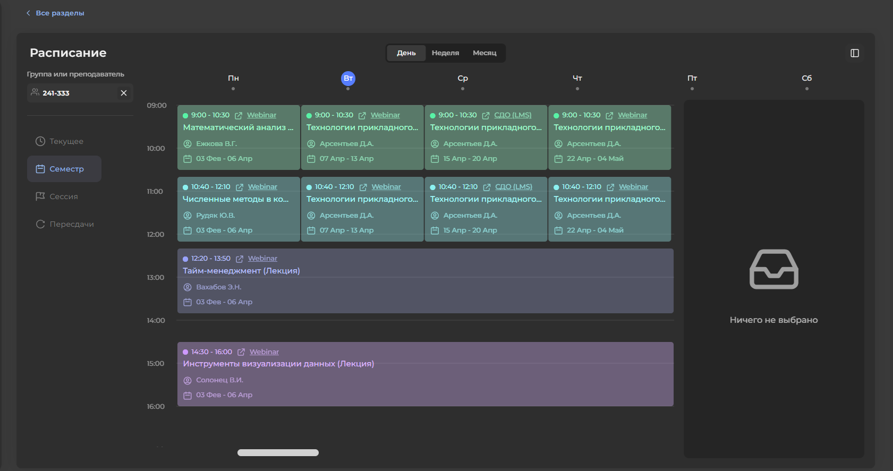
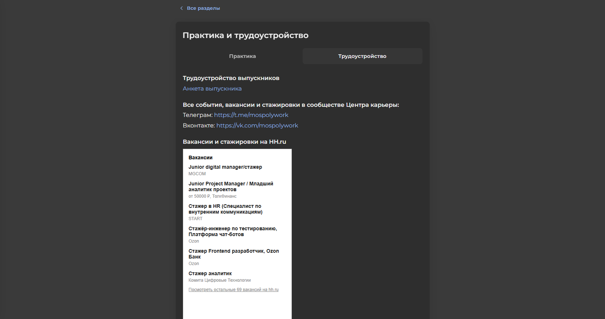
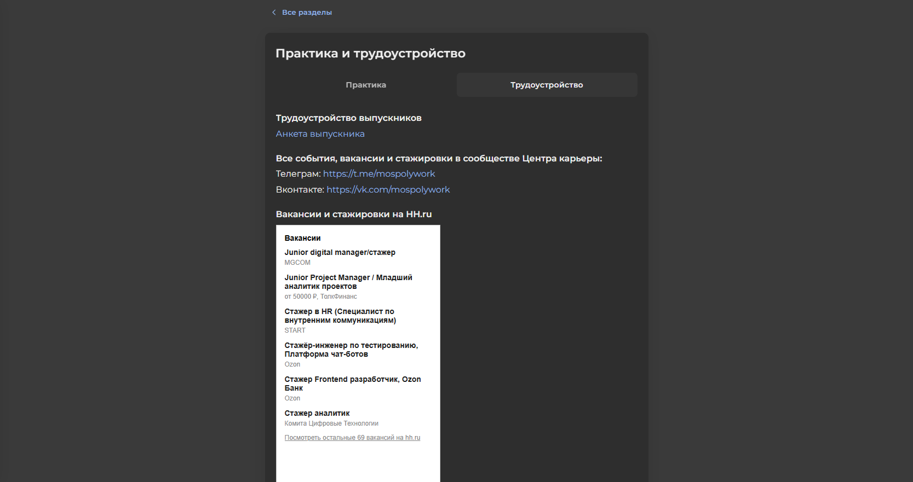

Описание проекта
Данный проект нацелен на внедрение инновационных решений, которые обеспечат студентам доступ к широкому кругу возможностей и
услуг, которые необходимы для успешного освоения образовательной программы. Личный кабинет даст возможность студентам
оперативно получать актуальную информацию об учебном процессе, эффективно управлять своим личным пространством в университете,
быстро решать административные вопросы.
Ключевые задачи проекта
- Разработать удобный интерфейс для легкого восприятия и навигации
- Создать систему оценки и мониторинга академической успеваемости
- Предоставить оперативный доступ к расписанию занятий, сессии
- Создать систему получения справочной информации и решение организационных вопросов
- Интегрировать сервисы коммуникации между студентами, преподавателями, работниками ВУЗ'а
Потенциальные пользователи системы
- Студенты бакалавриата, специалитета, магистратуры, аспирантуры МосПолитеха
- Руководители деканатов и подразделений
- Преподавательский состав и сотрудники администрации университета
Технические требования
- Поддержка различных устройств
- Высокий уровень безопасности персональных данных пользователей
- Стабильная работа при высокой нагрузке
Предполагаемый результат
После реализации данного проекта должно существенно повыситься качество предоставляемых образовательных услуг, облегчиться
учебный процесс, а также сделает общение внутрии университетского сообщества удобным и эффективным. Повысится мотивация студентов
благодаря легкому доступу к необходимой информации и оформлению необходимых документов. Таким образом, ВУЗ получит мощный
инструмент для улучшения своей репутации среди молодежи и работодателей.
Ниже Вы можете ознакомиться с основными функциями, реализуемыми в рамках данного проекта.
Профиль студента
Профиль позволяет видеть вашу образоватлеьную траекторию и прощает взаимодействия с ВУЗ'ом.
Основные поля:
- ФИО студента и дата рождения
- Уникальный код студента
- Факультет
- Направление подготовки и специализация
- Год набора и номер курса
- Номер группы
- Форма обучения (очная/заочная/дистанционная)
- Уровень образования (бакалавриат/магистратура/аспирантура)
- Вид финансирования (бюджетное/платный договор)
Преимущества функции
Данная функция помогает быстро ориентироваться в учебном процессе, своевременно подавать заявления.
Расписание

Функция расписания предназначена для информирования студентов Московского Политеха о занятиях, консультациях, экзаменах.
Студенты могут просматривать расписание занятий, экзаменов и пересдач с указанием:
- Даты, времени начала/окончания занятий
- Тип занятий (лекция, лабораторная работа, практика)
- Номер аудитории и номер корпуса
- ФИО преподавателя
Расписание отображается в календарном виде, отображение которого можно настроить в виде дня, недели, месяца.
Технические характеристики
- Простота интерфейса и интуитивно понятное управление
- Поддержка различных устройств и браузеров
- Использование современных технологий для хранения и обработки информации
Преимущества функции
Благодаря использованию данной функции упрощается организация учебного процесса, повышается уровень дисциплины
среди студентов и общая эффективность образовательного процесса Московского Политеха.
Успеваемость
В личном кабинете есть возможность отслеживать свой прогресс по сессии, физической культуре, проектной деятельности.
Рассмотрим каждую функцию по отдельности.
Прогресс по сессии
Данная функция позволяет удобно отслеживать оценки. Она наглядно показывает результаты экзаменов/зачетов.
Основные возможности:
- Просмотр оценок: наглядное представление ваших достижений по каждой дисциплине
- Предстоящие события: информация о предстоящих экзаменах/зачетах
Преимущества функции
Благодаря этой функции студенты могут получать своевременную информацию о своем образовательном прогрессе, вовремя
реагируя на возникающие трудности и достигая высоких показателей в учебе.
Прогресс по физической культуре
Удобный инструмент, позволяющий анализировать Ваш путь в достижении образовательных целей по дисциплине "Физическая культура"
и спортивной подготовке.
Возможности функции:
- Посещение занятий: отслеживание посещенных занятий по выбранной специализации
- Специализация: возможность выбора спортивной специализаии и просмотра прогресса по выбранному направлению
- Баллы: обзор набранных быллов за посещения занятий, сданные нормативы, соревнования
Преимущества функции
Данная функция является удобным помощником в эффективном планировании собственного учебного процесса, контроля собственной дисциплины.
Прогресс по проектной деятельности
Данная функция предназначена для удобного анализа Вашего прогресса участия в проектах. Эта опция очень полезная, так как позволяет
постоянно находиться в курсе набранных баллов и понимать свою позицию относительно заданных требований и критериев оценки.
Возможности функции:
- Набранные баллы: отображение полученных баллов на рызных этапах проекта
- Достижение цели: сравнение фактически накопленных баллов с требуемым минимумом для успешного завершения курса
Получение необходимых справок

Все необходимое для быстрого получения официальных бумаг собрано в вашем личном кабинете! Забудьте о походах в деканат и
ожидании очереди - оформляйте любую справку дистанционно за пару кликов мыши!
Какие справки можно заказать?
- Справка для военкомата (подтверждение об очном обучении)
- Справка с места обучени (для соцвыплат, работодателя, стажировки)
- Другие официальны справки, которые предоставляются в рамках регламента ВУЗ'а
Как получить справку?
- Зайдите в личный кабинет
- Откройте пункт меню "Цифровые сервисы"
- Укажите вид нужной справки и дополнительные детали
- Дождитесь готовности документа и получите уведомление
Преимущества функции
- Минимальны временные затраты
- Полностью дистанционное оформление
- Информация доступна круглосуточно
Коммуникация
В личном кабинете есть возможность для взаимодействия между студентами и преподавателями. Здесь Вы можете решать учебные
вопросы, обсуждать задания, делиться знаниями.
Чаты ускоряют процесс обмена важной информацией и делают учебу приятней и проще, позволяют создавать сообщество единомышленников.
Возможности функции
- Создание групповых чатов по направлениям подготовки и проектам
- Обсуждение вопросов с преподавателями
- Простота использования и интуитивно понятный интерфейс
Практика и трудоустройство
 

Данная функция позволяет студентам отслеживать свежую и актуальную информацию о вакансиях партнеров-работодателей
МосПолитеха, а также актуальный график практики и стажировок.
Преимущества функции
- Актуальные данные о предстоящих практиках
- Поддержка консультанта при выборе подходящей позиции
- Подбор предложений от партеров МосПолитеха
- Подробности о каждой вакансии и требованиях работодателя